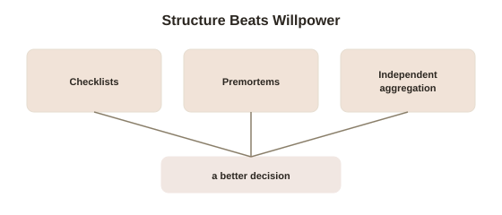

Chapter 5: What Actually Works to Debias a Decision
Three chapters have covered specific, well-documented ways judgment goes wrong — anchoring and availability, bias versus noise, loss aversion, the planning fallacy — and one theme has repeated across all of them: simply knowing about a bias barely reduces how much it affects you in the moment. That's a genuinely discouraging finding if the only tool on offer is "try harder to notice it." This closing chapter covers what actually has been shown to work — and it isn't willpower.
Structure beats awareness
The research consistently points in one direction: interventions that change the process of a decision outperform interventions that just ask people to think more carefully. A checklist — a fixed, specific list of factors to review before finalizing a decision — works precisely because it doesn't depend on remembering to be skeptical in the heat of the moment; it forces the same review every time, regardless of mood, fatigue, or how confident the decision-maker happens to feel that day. Atul Gawande's The Checklist Manifesto documented this effect concretely in surgery: a simple pre-operative checklist, covering steps experienced surgeons would say they obviously already do, reduced major complications and deaths substantially across hospitals in a large 2009 World Health Organization study — not because it taught surgeons anything new, but because it made sure known best practices actually got followed under real-world pressure and distraction, every single time, rather than only when someone happened to remember.
The premortem: arguing with the plan before it fails for real
Psychologist Gary Klein developed a specific technique aimed directly at overconfidence and the planning fallacy from Chapter 4, called the premortem (a structured exercise, run before a decision is finalized, in which a team imagines the project has already failed and works backward to explain why). The trick is subtle but effective: asking "what might go wrong?" tends to produce a short, hedged list, because it still implicitly assumes success is the default outcome. Asking a team to imagine the failure has already happened, and to explain it in specific, concrete detail, licenses exactly the kind of critical, dissenting thinking that Chapter 2's groupthink-adjacent group dynamics normally suppress — nobody is being a naysayer or a pessimist, they're just filling in a story that's been declared true by the exercise itself. Kahneman himself endorsed the premortem specifically because it counteracts overconfidence without requiring anyone to individually overcome it through sheer discipline.

Aggregating independent judgments to cancel out noise
Chapter 2's noise problem has its own dedicated fix, grounded in the same wisdom-of-crowds principle mentioned there: collecting several genuinely independent judgments — meaning each person judges without seeing or being influenced by the others' answers first — and combining them (by averaging, or through a structured process like Kahneman's proposed "decision hygiene" reviews) reliably reduces the random scatter that a single judgment, however expert, still carries. The independence part is essential and frequently gotten wrong in practice: a group discussion where the first, most confident person to speak anchors everyone else's answer isn't aggregating independent judgments at all — it's just adding social pressure on top of one person's opinion, which can make noise (and specific biases like anchoring) worse rather than better.
What this topic adds up to
Five chapters, across two related topics in this library, keep circling the same conclusion from different angles: human judgment, including expert judgment, is less reliable — and less reliably wrong in a single fixable direction — than it feels from the inside. The honest, if slightly humbling, takeaway isn't that careful, motivated people can simply think their way past these problems. It's that the decisions worth getting right deserve actual structural safeguards — checklists, premortems, independent aggregation — built in ahead of time, precisely because in-the-moment awareness, however well-intentioned, keeps failing to be enough on its own.
Try this
Ideas for noticing or testing this in your own life.
- Run a premortem on your next real decision: before committing, write a short paragraph imagining it's a year later and the plan failed badly — then work backward to explain, in concrete detail, what went wrong.
- Build one checklist for a decision you make repeatedly (hiring, a major purchase, a recurring judgment call at work) — a short, fixed list of what to check every time, regardless of how confident you feel about this particular instance.
Worth pulling on?
A few loose threads from this chapter — if any of these genuinely grab you, that's a good sign of where to go next.
- Groupthink is a specific, well-studied failure mode that structured, independent-judgment processes are partly designed to prevent. → Already in the library: Group Dynamics and Crowds covers groupthink and related group failures in depth.
- The premortem technique works partly by giving dissent social permission it wouldn't otherwise have — a specific structural fix for a pressure studied at length elsewhere in this library. → Already in the library: Obedience, Conformity & Situational Power covers why dissent is so hard to voice without that kind of structural cover.